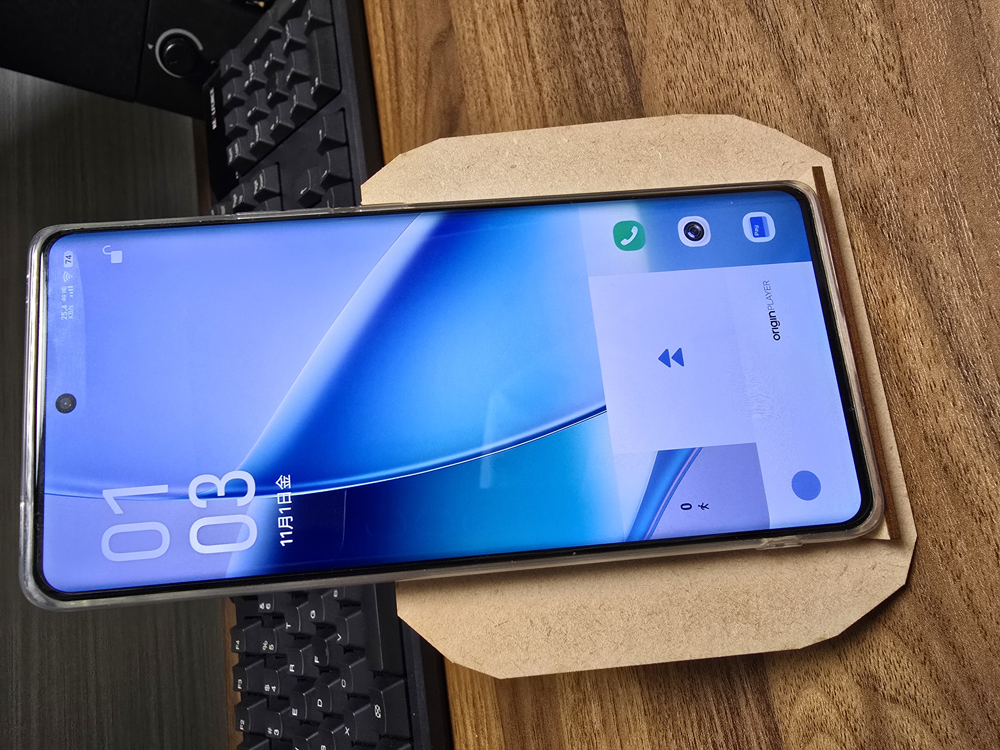
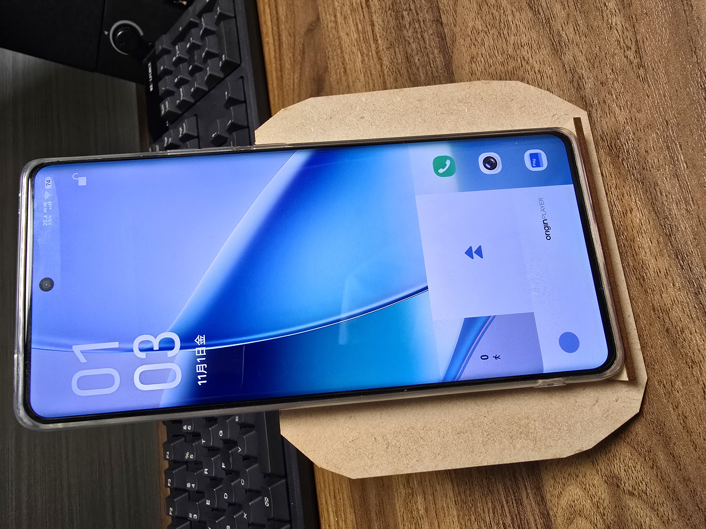

~構想段階のスケッチ~
最初は、自分の趣味がスマホ等のガジェットを集めることであるから、上記写真のように複数台スマホを収納できるスタンド兼充電ステーションを想定していたが、これだと材料オーバーしてしまうことに気づき一般的なスマホスタンドを作ることに変更した。
それが下記写真である。
時期がハロウィンに近いということもあり、デザインはジャックオーランタン風にすることにした。
~実際に印刷してみた~

各パーツ自分の思い通りに印刷できた。
~完成品~

 
dxfファイル→dxf
ジャックオーランタン風のスマホスタンドが完成した。
目、鼻、口は切り抜いたことでよりジャックオーランタン感が増したと思う。各パーツの接点は、アロンアルファでスマホが操作しやすい角度に接着することで機能性と強度を確保できた。
実際にスマホスタンドとしての役割も果たしてくれたので一安心。市販のスタンドのように角度調整はできないが、操作する分には問題ないのでご愛嬌ということで...笑
動画鑑賞に便利なのでこれからはYouTube等を観る時に使っていきたい。
~参考資料~
作成時に参考にさせていただいた2本の動画と、1つのサイト。とてもわかりやすく勉強になった。Fusionのdxfファイルの作成
レーザー加工機使い方
Adobe illustrator機能